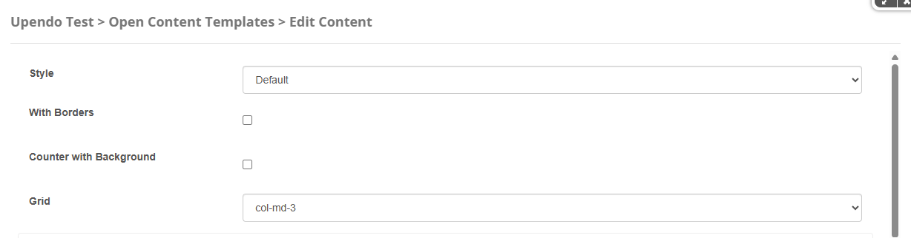

Porto-Counters Documentation
Overview
The Porto-Counters component allows you to create dynamic and visually appealing counters for your layout. It supports customizable styles, grid layouts, and animations to match your design needs. You can define counters with prefixes, suffixes, icons, and text to display key metrics or statistics.
For more details, check out the Porto-Counters repository on GitHub or the Porto documentation.
Usage Example
Edit
Default Style
Inline Style
Properties
| Style | Configuration | Description |
|---|---|---|
| Default | With Borders | Adds borders to the counters. |
| Counter with Background | Enables a background for the counters. | |
| Grid | Defines the grid layout for the counters. Options include col-md-1 to
col-md-12. |
|
| Items |
A list of counters to display. Each item can include the following properties:
|
|
| Inline | First Text | Text displayed before the counter value. |
| Data From | Starting value of the counter. | |
| Data To | Ending value of the counter. | |
| Alternative Font | Enables an alternative font for the counter. | |
| Last Text | Text displayed after the counter value. |
Settings

Settings Properties
| Property | Data Type | Description | Options |
|---|---|---|---|
| Counters Size | String | Defines the size of the counters. This setting adjusts the visual size of the counters to match the design requirements. |
|
Views
Below are examples of the different styles and configurations available for the Porto-Counters component. Each style is customizable and can be adapted to your design needs.
Default: A standard counter layout with no additional features.
Sizes: Counters available in different sizes: sm,
md, and lg.
Colors: Counters with customizable color themes (e.g., primary, secondary, tertiary).
Counter with Background: Counters with a solid or parallax background for enhanced visual appeal.
Counter with Custom Background: Counters with a custom image background.
Parallax: Counters with a parallax background effect for dynamic visuals.
With Icons: Counters with icons to represent metrics visually.
With Borders: Counters with borders for a more defined layout.
Special Content: Counters with advanced configurations, such as decimals, currency, percentages, and appended symbols.

Inline: Compact counters displayed inline with text for a seamless layout.
- With Borders: Requires
Styleto beDefault. - With Background: Requires
Styleto beDefault. - Background: Requires
With Backgroundto be enabled andStyleto beDefault. - Parallax Image: Requires
Backgroundto beparallaxandStyleto beDefault. - Inline: Requires
Styleto beInline.